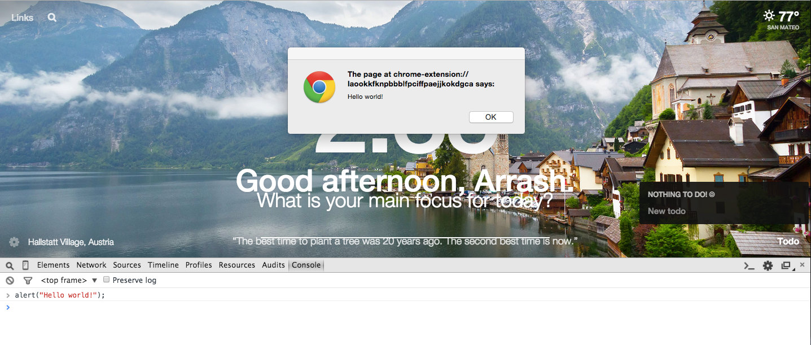
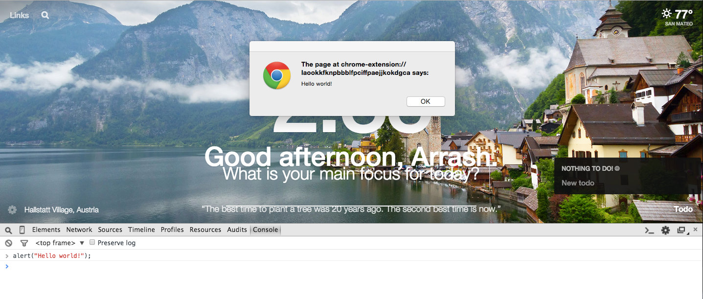

JS - DAY 2
What are we learning today?
Recap - go over what we did last time
Alerts - alerts the viewer of a message
Prompts - allow the user to input a response
Functions - alerts the viewer of a message
Alerts - alerts the viewer of a message
Prompts - allow the user to input a response
Functions - alerts the viewer of a message
Part 1: Recap
Last time we went over different variable types and how we can use test logic with if statements. We also went over how to use the console to be able to test which will be very valuable again
today to test different parts of the lesson.
Part 1: Alerts
So the first thing we're going to go over today is how to be able to interact with a user and alert them with a message. (This will be relatively simple)
Go ahead and pop open your browser (hopefully you're using Chrome) and go to the console. All we'll do is type alert("Hello world!"); . You'll notice that you'll receive
a pop up that alerts the user of Hello world!. We'll use this to alert the user of certain actions they've taken and to communicate with them.
NOTE: do not use uppercase to call alert, it's called with a lowercase 'a' 
NOTE: do not use uppercase to call alert, it's called with a lowercase 'a' 
Part 2: Prompts
Similar to alert, we can communicate with the user through prompts. Prompts are a way for us to get an input from the user. Traditionally, languages like C++, Python, Ruby etc. will use the terminal
to accomplish this. Because JavaScript runs on the client-side it uses the console to take inputs and to push outputs. In order to ask the user for an input without using DOM elements we can just use prompt.
prompt("what is your age?"); This will present the user with a field that they can fill in. You'll notice once you answer that it will put the response in the console as a string.
We can actually store the value that they input in the prompt into a variable and do things with it. Let's see an example.
NOTE: do not use uppercase to call prompt, it's called with a lowercase 'p' The user in this example entered 25 as their age. As you can see, we can take the input from the prompt and store it in a variable like I did here with "age". I then only console.log the variable age and we can see that it has properly stored the value of 25 that the user has entered.
NOTE: do not use uppercase to call prompt, it's called with a lowercase 'p' The user in this example entered 25 as their age. As you can see, we can take the input from the prompt and store it in a variable like I did here with "age". I then only console.log the variable age and we can see that it has properly stored the value of 25 that the user has entered.
Part 3: Introduction to Functions
Now that we've learned how to take an input from a user, and we've also learned how to do boolean logic to test for values using if statements we can start learning how to structure our code around functions. Similar to math,
functions can take a value or multiple values, manipulate the values and return a value back to the user. In math it would look something like this...
What we've done is declared a function, f(x) = x * 4, and then we went through and passed an argument into the function as 'x'. The first time we passed 2 in, and the function would return 8, simply because its 4 * 2 = 8. The second
example passes 4 in as x and this would return 16 as 4 * 4 = 16. This is very similar to creating functions in JS and any other programming language. To do the same thing in JS we're going to do this instead though...
Notice the way this is structured... a best practice is always to set your function equal to a variable (we'll see why later). We will use this variable as the way to invoke the function and give it uniqueness. we then initialize this variable as a function
'function(x)' and give it an argument that is passed in as 'x'. We then have curly braces so signify the body of the function and within the body we decide what we would like to perform. In this example, we're just taking the passed
argument 'x' and setting it equal to itself multiplied by 4, 'x = x *4'. In order to output this to the console we are just console.logging x. When you run this you'll see that the output is 8, which we would expect.
Let's take a look at a little more complex example... in this one we'll add an if statement inside the function to test for a value that we'll pass in. What we're doing here is instead testing to see if the value passed in is greater than a certain value. If it is or isnt then we'll log it a different way. We see that when we pass in 6, that the if statement gets passed to the else because the value
passed in is '6'. Let's take this one step further and now look at how we can start communicating with our user based on the inputs they pass in using prompt.
In this example, we're asking the user to input what the temperature is outside. We then store that value in a variable 'temp'. We then pass that value into our testFunction as the value of the argument 'temperature'. Once its passed in we then run it through
the body of the function which will test to see what season it must be. If the value is above 85, then it will output that its summer, if its less than 85 but greater than 65 it output that it must be fall, and if its less than 65 then it will hit the else.
What we're doing here is instead testing to see if the value passed in is greater than a certain value. If it is or isnt then we'll log it a different way. We see that when we pass in 6, that the if statement gets passed to the else because the value
passed in is '6'. Let's take this one step further and now look at how we can start communicating with our user based on the inputs they pass in using prompt.
In this example, we're asking the user to input what the temperature is outside. We then store that value in a variable 'temp'. We then pass that value into our testFunction as the value of the argument 'temperature'. Once its passed in we then run it through
the body of the function which will test to see what season it must be. If the value is above 85, then it will output that its summer, if its less than 85 but greater than 65 it output that it must be fall, and if its less than 65 then it will hit the else.
Let's take a look at a little more complex example... in this one we'll add an if statement inside the function to test for a value that we'll pass in.
What we're doing here is instead testing to see if the value passed in is greater than a certain value. If it is or isnt then we'll log it a different way. We see that when we pass in 6, that the if statement gets passed to the else because the value
passed in is '6'. Let's take this one step further and now look at how we can start communicating with our user based on the inputs they pass in using prompt.
In this example, we're asking the user to input what the temperature is outside. We then store that value in a variable 'temp'. We then pass that value into our testFunction as the value of the argument 'temperature'. Once its passed in we then run it through
the body of the function which will test to see what season it must be. If the value is above 85, then it will output that its summer, if its less than 85 but greater than 65 it output that it must be fall, and if its less than 65 then it will hit the else.
End of Lesson 2
Congrats on finishing Part 2 of the JS lesson! +10 points. We went over some good stuff today, functions is going to be an integral way of using JS and is the basis of all progrmaming.
(NOTE: They will always be only things we learned in the lesson. There is no need to use outside resources or something we didnt talk about to accomplish the sample problems.)
(NOTE: They will always be only things we learned in the lesson. There is no need to use outside resources or something we didnt talk about to accomplish the sample problems.)
PROBLEMS: Problem 1
What is your IQ? Design a function that takes an entered IQ and if it is greater than 140 alert the viewer that theyre a genius, otherwise alert them that they are sadly normal.
PROBLEMS: Problem 2
2) What is the weather? Design a function that takes the current weather (hot, cold, mild) and if its hot outside ask them what temperature, if it’s cold then we want to just tell them that stinks that they probably don’t live in California and that they should go back to Baaaaston.
FOOTER
Arrash Yasavolian
ayasavolian@marketo.com
5/28/15
ayasavolian@marketo.com
5/28/15